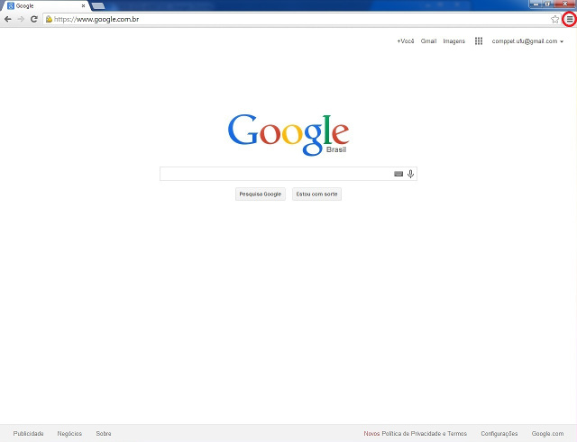
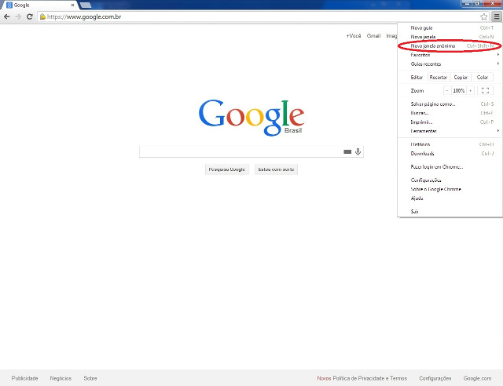
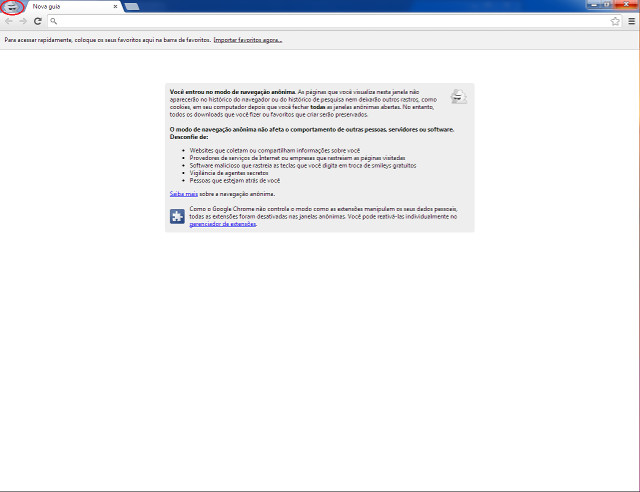

Navegação Anônima no Google Chrome(){
Dicas
Está acessando a internet de um local público e quer a segurança de não ter nenhum dado salvo no computador por engano? O navegador Google Chrome te dá a possibilidade de acessar a internet utilizando uma janela anônima.
A janela anônima, é uma janela igual ao do navegador, porém, os sites visitados, downloads e cookies que o browser grava dos sites não ficam armazenados. Se você está em um computador público e quer evitar esse tipo de situação, a janela anônima é uma boa solução para isso.
Veja como acessar a janela anônima:
No navegador do google chrome, clique neste botão no canto superior direito. Há também um atalho no teclado, apertando as teclas Ctrl+Shift+N.

Tela inicial do Google Chrome
Depois clique em “Nova janela anônima”.

Tela de opções do Google Chrome
Para conferir se está navegação anônima, veja se há o desenho do espião no canto superior esquerdo.

Tela da navegação anônima do Google Chrome
Pronto. Tudo o que for acessado a partir de agora não aparecerá no histórico, nem os sites armazenarão cookies dos sites visitados.
Referências:
}